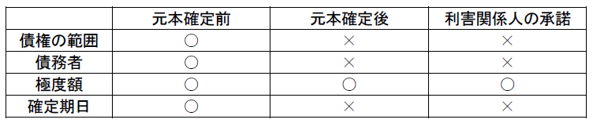
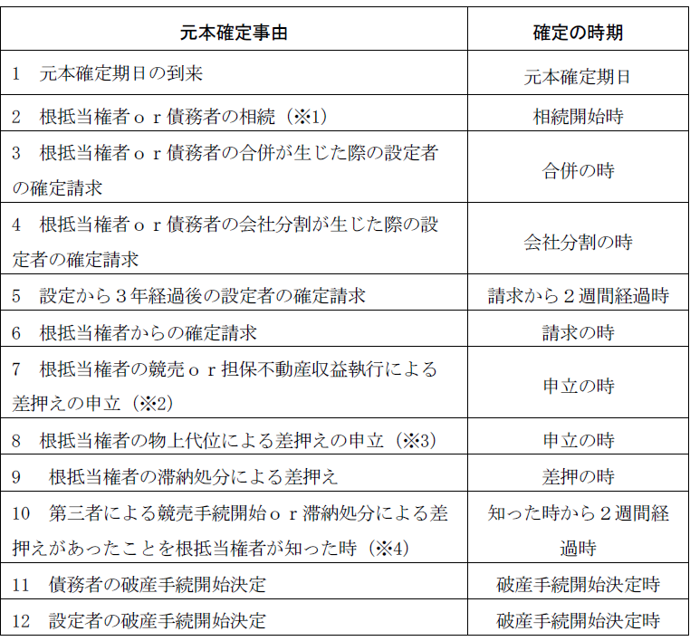

第３編 担保物権
第２章 抵当権
第５節 共同抵当（392条）
共同抵当：債権者が同一の債権の担保として、数個の不動産上に抵当権を有するもの
その機能は、①数個の不動産を集めて、担保価値を増大させることと、②抵当不動産のうちの一つに滅失･損傷や、価格の下落があっても危険を分散することができること、にある。
同一の債権を担保するために、数個の不動産の上に抵当権を設定することにより成立する。
不動産以外の地上権や永小作権に対しても設定できる。それぞれの設定行為が同時でなくてもよい。
抵当権のみではなく共同抵当権が設定されていることは、登記により公示される。
1. 同時配当
同時配当：共同抵当の目的物が同一の手続により競売され、その代価が同時に配当される場合
同時配当の場合、抵当権者の債権額を、各不動産の価格に応じて割付け（按分）し、その割合に従って各不動産から優先弁済を受けることができる（割付主義）。各後順位抵当権者は、それぞれ、残余につき優先弁済を受ける。本条の割付主義は、後順位抵当権者がいない場合にも適用される（大判昭10.４.23）。
2. 異時配当
(1) 総説（負担按分の原則）
異時配当：共同抵当においてある一部不動産の代価のみから配当を受けた場合
この場合には、同時配当と異なり競売された不動産の後順位抵当権者が配当を受けられなくなる可能性がある。そこで、同時配当がなされればその不動産が負担すべきであった金額を限度として、後順位抵当権者は共同抵当権者に代位できるものとした。
(2) 392条の適用
(a) 債務者所有型及び同一物上保証人所有型
異時配当の場合には、抵当権者はその代価につき債権の全部の弁済を受けられるが（392条２項前段）、競売された不動産についての後順位抵当権者は、同時配当がなされたならば配当を受けたであろう額の限度で、競売されなかった方の不動産に代位することができる（392条２項後段、最判平4.11.6）。
(b) 債務者・物上保証人所有型
ⅰ 債務者所有不動産から先に競売された場合
この場合、392条２項は適用されず、債務者所有不動産についての後順位抵当権者は物上保証人所有の抵当不動産に代位できない。
ⅱ 物上保証人所有不動産から先に競売された場合
別人所有であるため、392条2項の適用はない。しかし、この場合、物上保証人は求償権に基づいて債権者に代位することができる（499条、501条）。
そして、物上保証人が他の不動産について代位する権利の上に、後順位抵当権者は物上代位と同様の優先権を持つ（大判昭11.12.９、最判昭53.７.４）。
3. 共同抵当権の放棄
共同抵当の目的である甲・乙不動産が債務者所有の場合であって、甲不動産に後順位抵当権者がいるときに、共同抵当権者が乙不動産について設定された抵当権を放棄した場合、392条・504条類推により、放棄がなければ後順位抵当権者が代位することができた額について、後順位者に対して優先弁済権を主張できなくなる（大判昭11.７.14）。
この場合、先順位抵当権者が甲不動産を競売して後順位抵当権者が受けるべき優先額についてまで配当を受けたときは、これを不当利得として、後順位抵当権者に返還しなければならない（最判平４.11.６）。
第６節 根抵当権
Ⅰ 総説
：一定の範囲に属する不特定の債権を極度額の限度において担保するために設定される抵当権（398条の２第１項）
継続的に取引している当事者間では、債権・債務が発生・消滅を繰り返し、その額も一定ではない。ところが、通常の抵当権には消滅における付従性が存在するため、このような継続的取引で利用しようとすると発生・消滅に応じていちいち設定・抹消を繰り返さなければならず、煩雑で不便である。そこで、継続的取引関係から生じる債務を一括して担保するために、消滅における付従性を制限された抵当権として生み出されたのが根抵当権である。
1. 付従性
根抵当権は将来において発生・消滅を繰り返す不特定債権を担保するものであるため、当事者間に発生する個々の具体的な債権と根抵当権とは直接的な関連性を持たないから、付従性は否定される。従って、根抵当権は元本が確定するまでは、当事者間に発生する個々の具体的な債権に発生・消滅という変化が生じ、たとえ債権が皆無となっても消滅しない。
2. 随伴性
元本確定前においては、当事者間に発生する個々の具体的債権が譲渡されても、根抵当権は移転しない（398条の７）。すなわち、随伴性は否定される。
3. 独立性
被担保債権から切断された価値支配権としての性質を独立性という。根抵当権は元本確定前においては、付従性が否定されており、一応独立性を有しているといえる。しかし、根抵当権も特定の融資関係ないし債権関係から発生する債権を担保するという性質を有しており、これらの影響が完全に遮断されているわけではない。
1. 根抵当権設定の当事者
根抵当権を取得する者と設定者間の根抵当権設定契約によって設定される。
2. 設定契約の内容
(1) 必要的事項
①被担保債権の範囲、②債務者、③極度額（398条の２）
(2) 任意的事項
元本確定期日（398条の６第１項）
3. 被担保債権の範囲
現行法では、債権者と債務者との間に生ずるすべての債権を担保する包括根抵当は認められておらず、被担保債権は「一定の範囲に属する不特定の債権」（398条の２第１項）でなければならない。
なお、設定時に既に生じている特定債権を不特定債権と併せて被担保債権とすることはできるが、特定債権のみを被担保債権として根抵当権を設定することはできない。
被担保債権の範囲に関して、抵当権について被担保債権の範囲についての規定である375条の適用はない。従って、元本のほか、根抵当権が実行され抵当目的物の売却代金が配当される間に発生したものであれば、利息・遅延損害金についても極度額に達するまですべて担保される。
Ⅱ 根抵当権の変更・処分等
1. 被担保債権の範囲の変更
元本確定前においては、設定当事者間の合意で根抵当権の担保すべき債権の範囲を変更することができる（398条の４第１項前段）。この変更には後順位抵当権者・転抵当権者等第三者の承諾を得ることを要しない（同条２項）。ただし、元本確定前に変更の登記をしなければ変更をしなかったものとみなされる（同条３項）。そこで、変更登記は事実上の効力発生要件と考えられている。
なお、根抵当権が共有である場合には、被担保債権の範囲及び債務者は、各共有者間で異なってもよいが、この変更は、根抵当権の変更としてすべての共有者が当事者とならなければならない。
2. 債務者の変更
被担保債権の範囲の変更と同様、元本確定前においては、設定当事者間の合意で債務者を変更することができる。第三者の承諾を得る必要がなく、元本確定前に変更の登記をしなければ変更をしなかったものとみなされる点も同様である（398条の４第１項後段、２項、３項）。
3. 極度額の変更
極度額の変更（増額・減額）は設定当事者の合意と利害関係人の承諾によってなされる（398条の５）。そして、利害関係人の承諾が得られれば、元本確定の前後を問わず変更することができる。
ここでいう利害関係人とは、極度額の増額・減額によって不利益を受ける者をいう。
4. 確定期日の新設・変更
元本について確定期日の定めがない場合においては、確定期日の新設を、元本について確定期日の定めがある場合においては、確定期日の変更（延長・繰上げ・廃止）を設定当事者間の合意ですることができる（398条の６第１項）。この場合、利害関係を有する第三者の承諾を要しない（398条の６第２項、398条の４第２項）。ただし、確定期日の新設・変更をした場合、その新設・変更期日は新設・変更した日から５年以内でなければならない（398条の６第３項）。
確定期日の変更は、変更前の期日より前に登記をしなければ元本は変更前の期日で確定する（398条の６第４項）。

1. 根抵当権の譲渡
根抵当権は通常の抵当権と異なり被担保債権から切断された独立性を有する権利であるため、通常の抵当権とは異なった処分方法（全部譲渡、分割譲渡、一部譲渡）が定められている。
(1) 全部譲渡
元本確定前においては、譲渡人たる根抵当権者と譲受人の合意のほか、根抵当権設定者の承諾を得てその根抵当権を譲渡（全部譲渡）することができる（398条の12第１項）。この全部譲渡は元本確定前の根抵当権を被担保債権とは独立に譲受人に移転するものである。なお、対抗要件として登記が必要である。
(2) 分割譲渡
根抵当権の分割譲渡とは、元本確定前の根抵当権を２個の根抵当権に分割してその１つを譲渡することをいう（398条の12第２項前段）。分割譲渡をするには、全部譲渡の場合と同様、譲渡人たる根抵当権者と譲受人の合意のほか、根抵当権設定者の承諾を得る必要がある（398条の12第２項前段、１項）。対抗要件として登記が必要である。
分割譲渡は２つの抵当権が生じ、その１つが譲渡されて他が譲渡人のもとに残ることから、全部譲渡と異なる点がある。根抵当権の分割譲渡が行われると、その根抵当権を目的とする権利（転抵当等）は、譲渡した根抵当権について消滅することになる（398条の12第２項後段）。従って、分割譲渡をするには、根抵当権を目的とする権利を有する者の承諾が必要とされる（同条３項）。
(3) 一部譲渡
一部譲渡とは、譲渡人と譲受人との間で、元本確定前の根抵当権を準共有する関係を成立させる処分方法をいう（398条の13）。一部譲渡をするには、全部譲渡の場合と同様に、譲渡人たる根抵当権者と譲受人の合意のほか、根抵当権設定者の承諾を得る必要がある。対抗要件として登記が必要であることも同様である。
一部譲渡がなされると、譲渡人及び譲受人両当事者が極度額を共同利用することになる。
2. 転抵当
元本確定の前後を問わず、することができる。
1. 共同根抵当
(1) 意義
（純粋）共同根抵当： 392条、393条の規定が適用される共同根抵当
累積（共同）根抵当：各不動産につきそれぞれ負担すべき極度額を定めて、根抵当権者の被担保債権を累積的に負担させる方法
(2) （純粋）共同根抵当
(a) 成立要件
次の２つの要件を具備した場合に（純粋）共同根抵当となり、392条、393条が適用される。
ⅰ 「同一の債権の担保」として数個の不動産に根抵当権が設定されること（398条の16）
「同一の債権」とは、被担保債権の範囲、債務者、極度額が同一であることをいう。
ⅱ 設定と同時に共同根抵当権である旨を登記すること（398条の16）
この登記は共同担保の登記であり、効力発生要件である。また、登記は根抵当権の設定登記と同時になされる必要がある。
(b) 変更
各不動産上の根抵当権は、変更・処分について共通の運命に服する。これは複雑な法律関係を避けるためである。そのため、被担保債権の範囲、債務者若しくは極度額の変更、又は全部譲渡若しくは一部譲渡は、すべての不動産につき登記をしなければ、その効力が生じない（398条の17第１項）。
(c) 元本確定
共同根抵当の目的である１つの不動産に元本確定事由が生じた場合は、根抵当権の元本は確定する（398条の17第２項）
(3) 累積（共同）根抵当
各不動産につきそれぞれ負担すべき極度額を定めて、根抵当権者の被担保債権を累積的に負担させる方法である。配当については、根抵当権者は各不動産の代価につき、各極度額に至るまで優先権を行使することができる。また、数個の根抵当権はそれぞれ独立の根抵当権であるから、後順位抵当権者の代位は生じない。
（純粋）共同根抵当の要件を満たさない場合は、この累積根抵当として扱われる。
Ⅲ 元本の確定
1. 元本確定の意義
根抵当権によって担保される被担保債権が最終的に特定されることを元本の確定という。元本の確定によって、根抵当権は不特定債権の担保という基本的性格を失い確定債権を担保する抵当権となるのであり、付従性・随伴性などを取得して、普通抵当権の規定が適用されることになる。
2. 確定事由
元本の確定は以下の場合に生じる。

※1 相続開始後６ヵ月以内に合意の登記をしなかった場合
※2 手続き開始が必要だが、開始後に効力失っても確定の効果は存続
※3 差押えがあったことが必要だが、差押後に差押が効力を失っても確定の効果は存続
※4 一旦差押があってもその後差押の効力が失われた場合は確定の効果は消滅
(1) 確定期日の到来（398条の６第１項）
根抵当権者と根抵当権設定者が合意で確定期日を定めた場合には、期日の到来によって確定が生じる。
(2) 根抵当権者又は債務者の相続（398条の8第4項）
元本の確定前に根抵当権者又は債務者が死亡した場合、根抵当による継続的な関係を存続させるか終了させるかは各相続人と根抵当権設定者との合意の有無に関わる。合意が成立しない場合又は合意が成立しても相続開始後６か月以内に合意の登記がされない場合には、根抵当権は確定したものとみなされる（398条の８第４項）。
(3) 根抵当権者又は債務者の合併が生じた際の設定者の確定請求
元本の確定前に法人である根抵当権者又は債務者に合併があった場合、根抵当権は基本的に承継されるが、根抵当権設定者はその承継を望まない場合、元本の確定を請求することもできる。（398条の９第３項本文）。ただし、債務者に合併が生じた場合において、根抵当権設定者が債務者であるときには、確定請求はできない（同条項ただし書）。
確定請求がなされた場合、元本は合併のときに確定したものとみなされる（同条４項）。ただし、この確定請求は合併を知った日から２週間、合併の日から１か月を経過したときはすることができない（同条５項）。
(4) 根抵当権者又は債務者の会社分割が生じた際の設定者の確定請求
元本の確定前に根抵当権者又は債務者に会社分割があった場合、基本的には合併の場合と同様の規制を受ける。
この場合、合併の場合と同様に、根抵当権設定者に確定請求が認められる（同条３項、398条の９第３項～５項）。
(5) 設定から３年経過後の設定者の確定請求（398条の19第１項）
元本の確定期日の合意をしておらず、かつ、設定から３年を経過した場合には、根抵当権設定者は元本の確定を請求することができる（398条の19第１項前段、３項）。この請求があった場合、請求から２週間経過した時に元本が確定する（同条１項後段）。
(6) 根抵当権者の確定請求（398条の19第２項）
元本の確定期日の合意をしていない場合、根抵当権者はいつでも元本の確定を請求することができる（398条の19第２項前段、３項）。この請求があった場合、元本は請求の時に確定する（同条２項後段）。
(7) 根抵当権者の競売・担保不動産収益執行による差押えの申立てをしたとき（398条の20第１項１号）
(8) 根抵当権者の物上代位による差押えの申立て（398条の20第１項１号）
根抵当権者が抵当不動産について、競売、担保不動産収益執行の手続の開始、又は物上代位による差押えを申立て、それらの手続の開始又は差押えがあった場合、元本は確定する。
(9) 根抵当権者が滞納処分による差押えをしたとき（398条の20第１項２号）
根抵当権者である国又は公共団体が抵当不動産に対して滞納処分による差押えをした場合、元本は確定する。
(10) 根抵当権者が競売開始又は滞納処分の差押えを知った時から２週間を経過したとき（398条の20第１項３号）
根抵当権者が抵当不動産に対して、他の抵当権者や一般債権者による競売手続の開始又は滞納処分による差押えのあったことを知った時より２週間が経過した場合、元本は確定する。
(11) 債務者又は根抵当権設定者の破産手続開始の決定（398条の20第１項４号）
債務者又は根抵当権設定者が破産手続開始の決定を受けた場合、元本は確定する。
1. 元本確定後の極度額減額請求
元本の確定後において、根抵当権設定者は、その根抵当権の極度額を、現に存する債務の額と以後２年間に生ずべき利息その他の定期金及び債務の不履行による損害賠償の額とを加えた額に減額することを請求することができる（398条の21第１項）。これにより残りの担保価値を利用できることになる。
2. 元本確定後の根抵当権の消滅請求
元本の確定後、確定した債務額が極度額を超える場合、物上保証人や抵当不動産について所有権、地上権、永小作権若しくは第三者に対抗することができる賃借権を取得した第三者は、その極度額に相当する金銭を払い渡し又は供託することによって根抵当権の消滅を請求することができる（398条の22第１項）。これらの者が第三者弁済する場合は、本来ならば債務額の全額を支払わなければ債務が消滅しないはずだが、根抵当権を消滅させるためには極度額を支払えば十分であり、根抵当権者も害しないことから、極度額に相当する金額の払い渡し又は供託による根抵当権の消滅を認めたものである。超過分の債権は無担保となる。
第７節 抵当権の消滅
物権共通の消滅原因（目的物の滅失など）、担保物権共通の消滅原因（被担保債権の弁済など）のほか、抵当権特有の消滅原因として、以下のものがある。
債務者及び物上保証人に対する関係では被担保債権が時効消滅したときに限り消滅する（396条）。これに対して、抵当不動産が他人に譲渡された場合の第三取得者については原則どおり166条２項により20年の時効にかかる（大判昭15.11.26）。ただし、被担保債権の消滅時効完成後には第三取得者も145条の時効援用権者にあたるので、第三取得者の独自の時効の成立が問題となることはあまりない。
抵当不動産に取得時効が完成すると、占有者は所有権を原始取得するので抵当権は消滅する。ただし、債務者や物上保証人については取得時効の成立が制限される（397条）。
地上権又は永小作権を抵当権の目的とした地上権者又は永小作人は、その権利を放棄しても、これをもって抵当権者に対抗することができない（398条）。
借地上の建物に抵当権を設定した場合の借地権の放棄には398条が類推適用される（大判大11.11.24）。